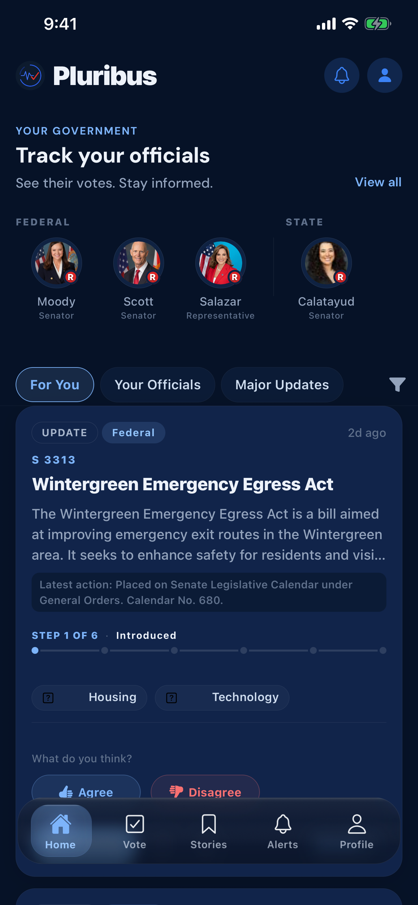

01 / Mobile civic product
Pluribus
A clearer way to follow the government decisions that affect you—and see where every important claim came from.

The problem
Public information is available, but it is scattered across agencies, formats, and levels of government. Finding a bill is not the same as understanding what changed, who represents you, or what happens next.
Pluribus puts representatives, legislation, elections, and official sources into one mobile experience built around those practical questions.
What I built
- A personalized civic feed, bill details, representative profiles, saved items, alerts, and vote planning
- Normalized records that reconcile several civic providers without making one API the permanent source of truth
- Provenance and freshness signals so the product can explain the origin and limits of its information
- App Store metadata, privacy answers, screenshots, and a tested release candidate
Key decisions
Official sources are the foundation
Aggregators help with discovery, but records preserve where information came from and when it was retrieved.
Useful before universal
I chose a deeper Florida and Miami-Dade slice over claiming incomplete nationwide coverage.
Make uncertainty visible
The interface separates sourced facts, summaries, and gaps instead of presenting every statement with the same confidence.
What I learned
Civic software is a data-quality product before it is a feed. The interface earns trust only when the system can explain the origin, age, scope, and limits of the information underneath it.
React Native · Expo · Node.js · PostgreSQL · public civic data · iOS release tooling